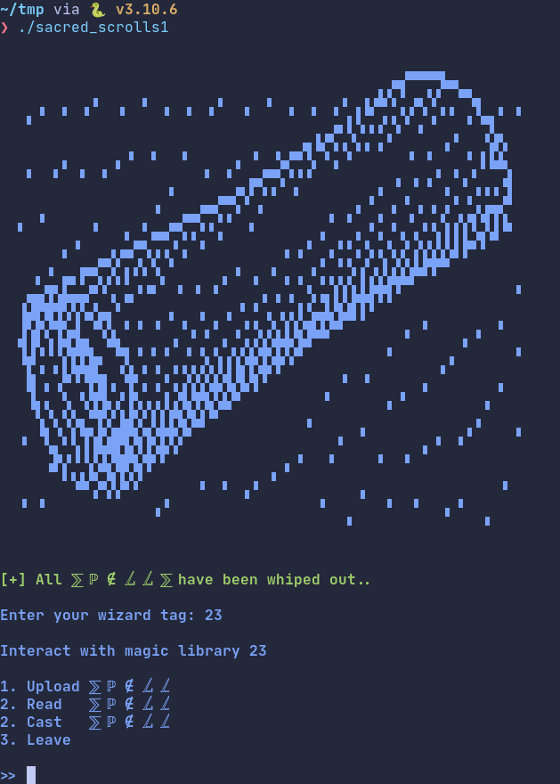
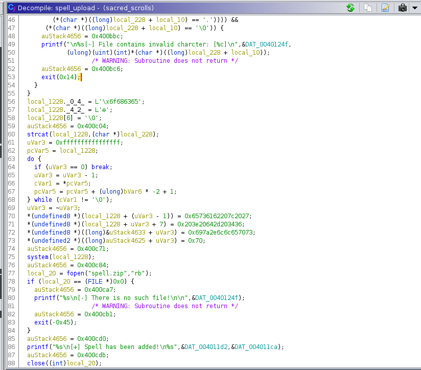
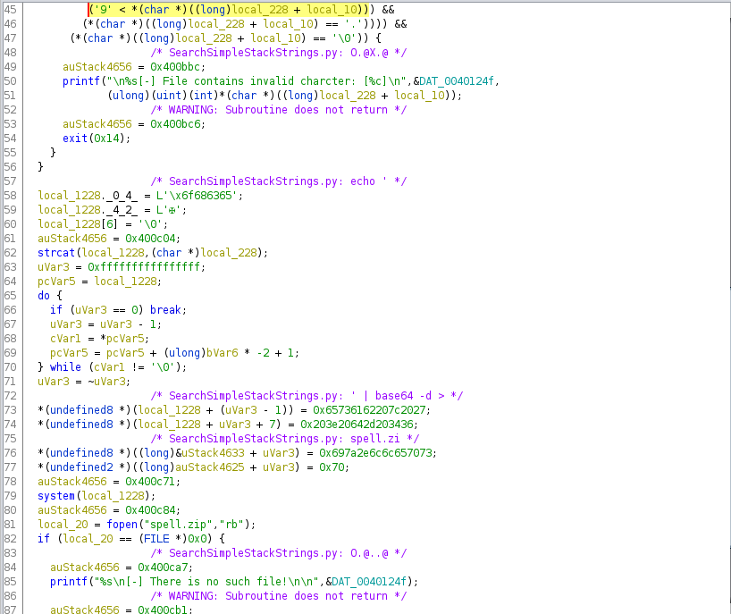

HTB 2022 Supernatural Hacks writeups
Reverse⌗
Potion Master (easy)⌗
Дан код на haskell-е:
import Data.Char (ord)
import Data.Bits (xor)
-- Complete the incantation...
flag = "HTB{XXX}"
extractFlag :: String -> String
extractFlag (s:rest)
| s == 'H' || s == 'T' || s == 'B'
= extractFlag rest
| s == '{' && last rest == '}'
= init rest
| otherwise = error ("Invalid format")
chunks :: Int -> [a] -> [[a]]
chunks n l
| n == 0 = []
| n == 1 = [[x] | x <- l]
| length l <= n = [l]
| otherwise = [take n l] ++ (chunks n (drop n l))
takeLast :: Int -> [a] -> [a]
takeLast n = reverse . take n . reverse
a = [-43, 61, 58, 5, -4, -11, 64, -40, -43, 61, 62, -51, 46, 15, -49, -44, 47, 4, 6, -7, 47, 7, -59, 52, -15, 11, 7, 61, 0]
b = [6, 106, 10, 0, 119, 52, 51, 101, 0, 0, 15, 48, 116, 22, 10, 58, 125, 100, 102, 33]
c = [304, 357, 303, 320, 304, 307, 349, 305, 257, 337, 340, 309, 428, 270, 66]
d = [52, 52, 95, 95, 110, 49, 51, 51, 95, 110, 110, 53]
checkFlag :: String -> Bool
checkFlag flag =
length content == 58 &&
all (==True) (map (\ (l,r) -> l == r) (zip one a)) &&
all (==True) (map (\ (l,r) -> l == r) (zip two b)) &&
all (==True) (map (\ (l,r) -> l == r) (zip three c)) &&
all (==True) (map (\ (l,r) -> l == r) (zip four d))
where content = map ord (extractFlag flag)
one = map (\ [l, r] -> (l - r)) (chunks 2 content)
two = map (foldr xor 0) (chunks 3 content)
three = map (foldr (+) 0) (chunks 4 content)
four = map head (chunks 5 content)
main = putStrLn (if (checkFlag flag)
then "The spell went off without a hitch!"
else "You disappear in a puff of smoke!"
)
Читаем код, обращаем особенное внимание на следующие строчки
length content == 58 &&
all (==True) (map (\ (l,r) -> l == r) (zip one a)) &&
all (==True) (map (\ (l,r) -> l == r) (zip two b)) &&
all (==True) (map (\ (l,r) -> l == r) (zip three c)) &&
all (==True) (map (\ (l,r) -> l == r) (zip four d))
where content = map ord (extractFlag flag)
one = map (\ [l, r] -> (l - r)) (chunks 2 content)
two = map (foldr xor 0) (chunks 3 content)
three = map (foldr (+) 0) (chunks 4 content)
four = map head (chunks 5 content)
Сразу видим что длинна содержимого флага 58, а так же что массивы one и a, two и b и тд сравниваются поэлементно.
Понимаем, что берется содержимое внутри флага (между HTB{ и }),
далее это все разбивается на чанки.
Сначала на чанки по 2 символа, из первого символа вычитается второй и результат заносится в one.
Затем по 3, все 3 символа ксорятся, результат в two.
Далее в чанке по 4 символа символы складываются.
А потом берется чанк размером 5 и в нем берется первый символ.
Можно пойти в лоб и начать писать обратные функции, но я решил попробовать z3.
Спустя некоторое время из меня вышел такой решатор.
from z3 import *
from operator import xor
from functools import reduce
def chunks(lst, n):
for i in range(0, len(lst), n):
yield lst[i:i + n]
a = [-43, 61, 58, 5, -4, -11, 64, -40, -43, 61, 62, -51, 46, 15, -49, -44, 47, 4, 6, -7, 47, 7, -59, 52, -15, 11, 7, 61, 0]
b = [6, 106, 10, 0, 119, 52, 51, 101, 0, 0, 15, 48, 116, 22, 10, 58, 125, 100, 102, 33]
c = [304, 357, 303, 320, 304, 307, 349, 305, 257, 337, 340, 309, 428, 270, 66]
d = [52, 52, 95, 95, 110, 49, 51, 51, 95, 110, 110, 53]
flag = [BitVec('x%s' % (i+1), 32) for i in range(58)]
a_solver = [flag[i] - flag[i+1] for i in range(0, 58, 2)]
b_solver = [reduce(xor, i) for i in list(chunks(flag, 3))]
c_solver = [sum(i) for i in list(chunks(flag, 4))]
d_solver = [BV2Int(i[0]) for i in list(chunks(flag, 5))]
s = Solver()
for i in range(len(flag)):
s.add(And(flag[i] < 255, flag[i] > 0))
for i in range(len(a_solver)):
s.add(a_solver[i] == a[i])
for i in range(len(b_solver)):
s.add(b_solver[i] == b[i])
for i in range(len(c_solver)):
s.add(c_solver[i] == c[i])
for i in range(len(d_solver)):
s.add(d_solver[i] == d[i])
print(s.check())
h = s.model()
k = []
for i in range(len(h)):
k.append(chr(h.evaluate(flag[i]).as_long()))
print("HTB{" + ''.join(k) + "}")
Флаг: HTB{4_m0n4d_15_ju57_4_m0n01d_1n_7h3_c47360ry_0f_3nd0func70r5!!}
Pwn⌗
Sacred Scrolls (easy)⌗
Дан бинарь
Пытаемся сразу запустить и видим такую картину

Начинаем реверсить в ghidra

Видим system и strcat перед вызовом system.
Также видим что гидра не распарсила строки и представила их в виде чисел. Открываем Script Manager находим SearchSimpleStackStrings, нажимаем и видим нормальные строки

Теперь понятно, наш ввод помещается в сл комманду echo 'input' | base64 -d > spell.zip
Поэтому пишем простую bash injection, на код выше даже не смотрим, он пропускает все символы которые нам нужны
Решение: '; cat flag.txt; echo '34
Флаг: HTB{r3t2l1bc_4_51mpl3_5p3ll_but_qu13t_unbr34k4bl3}